👋 你好，我是
孙学文
快手 · 企业社会责任经理
横跨影视、艺文、互联网公益的内容人，擅长用"电影感叙事 + 展览级审美 + 平台级传播"打造有情绪记忆点的品牌内容。3 年间操盘的公益 IP「帮帮学堂」（原幸福大讲堂）入选清华大学公管学院乡村振兴案例库。
四川电影电视学院
文化产业管理 · 本科 · 2018 — 2023
管理学院颁奖典礼晚会 · 总导演
2022.05 — 06组建并管理60人工作组，选拔80名演职人员，统筹节目编排与全流程把控。协调校内场地设备资源，洽谈校外赞助及奖品合作；全程监督彩排与演出，实时处理音响、舞美等突发状况，保障2.5小时晚会零事故落地。
两场晚会均在学校大剧院举办，获学院领导书面表扬。
快手
企业社会责任经理
2025.01 — 至今
工作内容
公益 IP 升级与全案运营
承接并升级快手公益 IP「帮帮学堂」（原幸福大讲堂），主导内容焕新与新视觉体系落地：构建"短视频 + 直播 + AI"能力培训体系，覆盖新农人、银龄群体、职校学生；沉淀"普惠学堂 + 师训计划 + 共享直播间"标准化运营 SOP，跑通"受益人 → 传播者 → 共建者"用户转化漏斗；高频出差全国调研与落地项目，协调政府、场地、讲师、物料资源，确保公益项目有效适配与高质量交付。
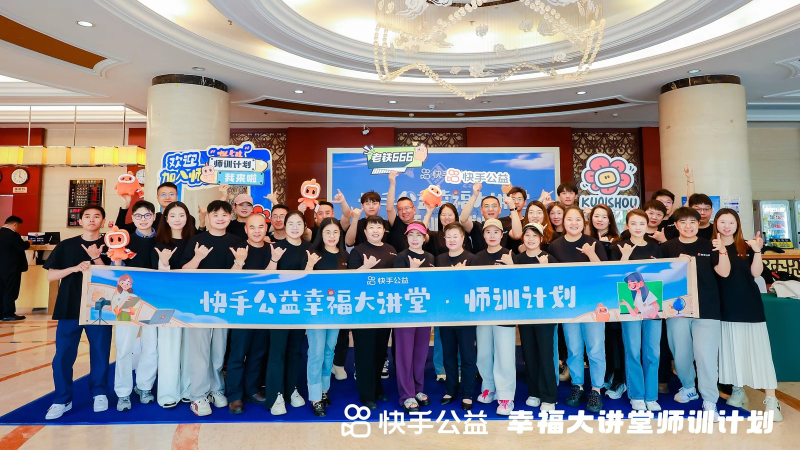
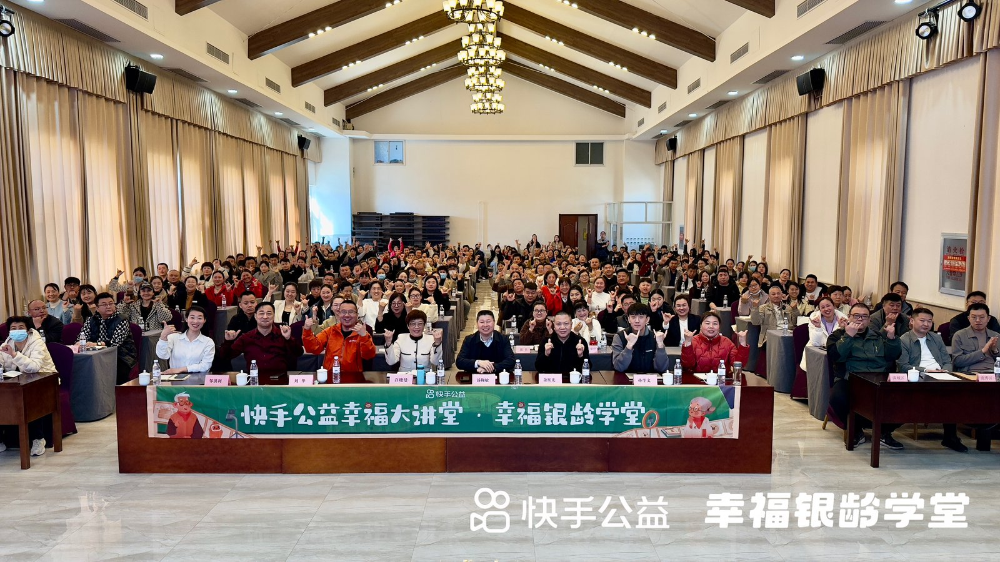
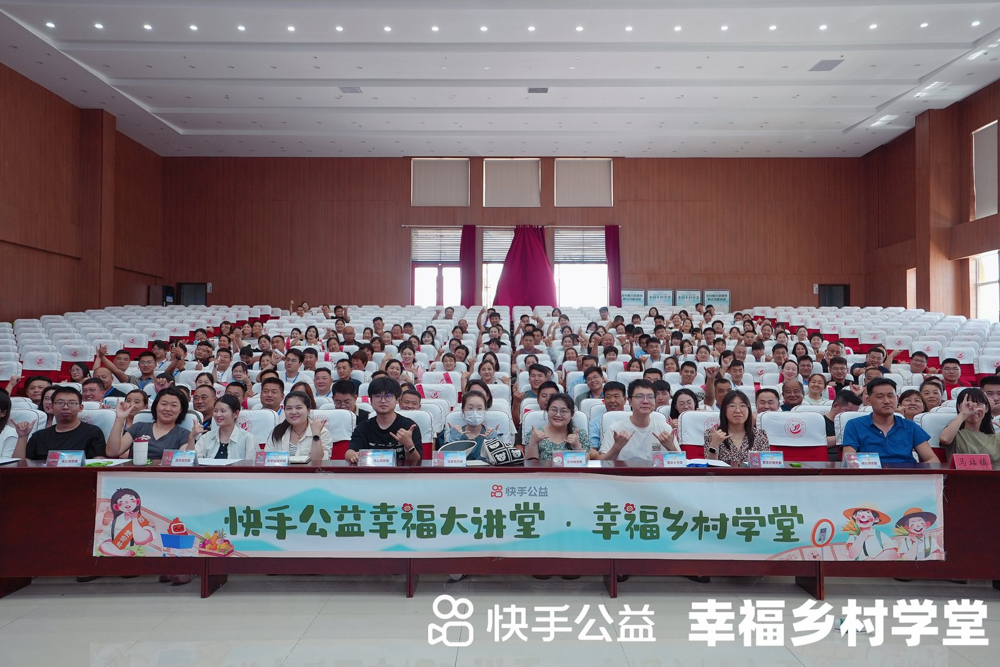
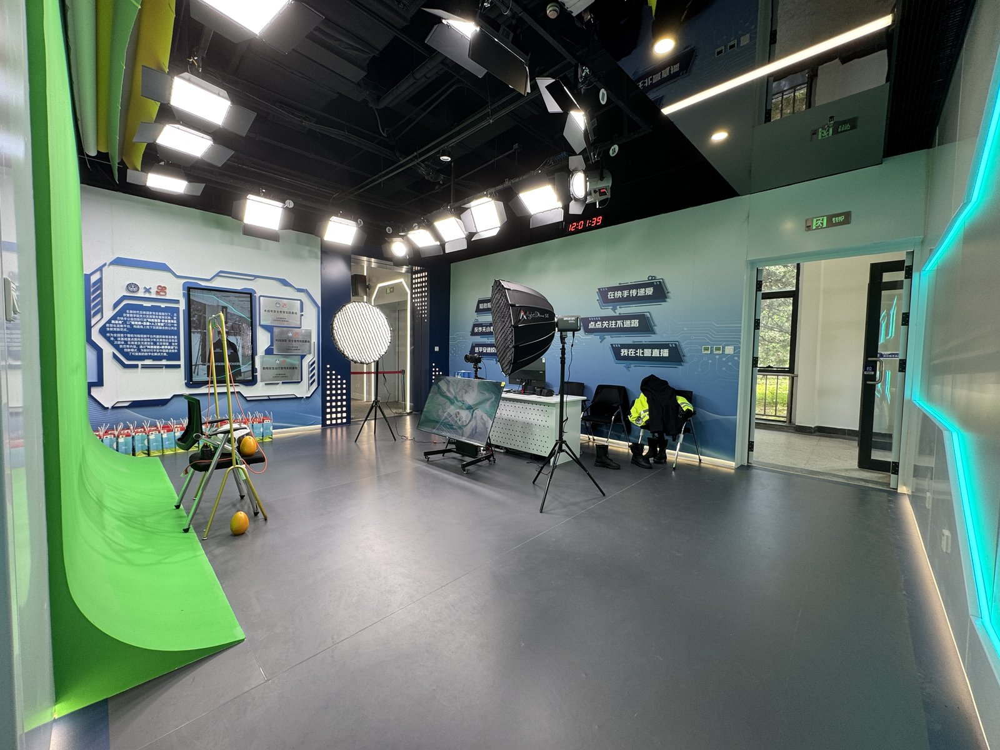
整合营销与内容传播
统筹 IP 视觉规范与对外传播口径，主笔 CSR 报告、政府汇报材料、主流媒体新闻通稿，搭建 H5 与品牌物料体系；策划端内话题运营，通过达人共创 + 任务挑战赛撬动 UGC 内容供给。
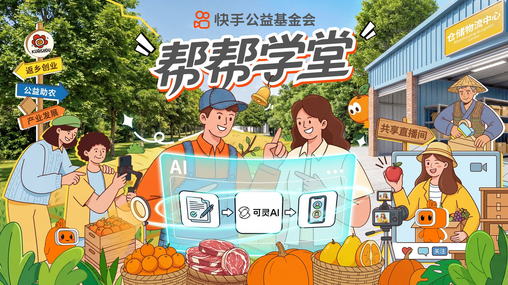
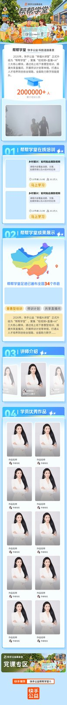
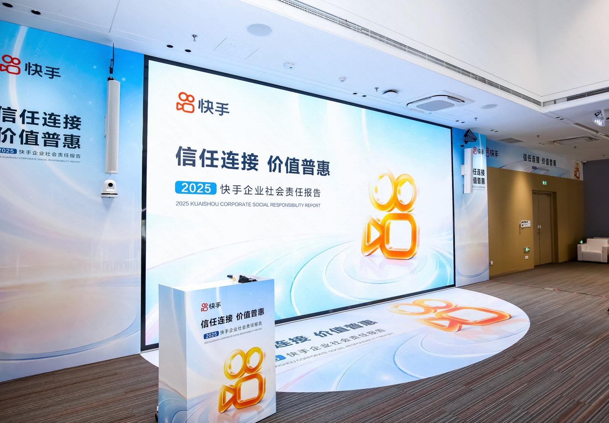
司内文化建设
负责「一封'哇塞'的来信」「我的哇塞时刻」司内公益 campaign 全流程：从主题策划、视觉物料、线上影像征集机制设计，到线下沉浸展览搭建、实地回访执行、活动复盘。
负责快手 14 周年司庆公益展位全流程：方案策划、互动体验设计、非遗文创合作、线上直播联动、物料制作、现场运营到复盘总结。
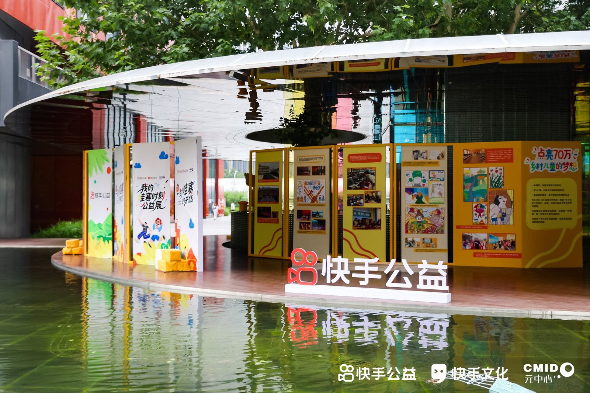
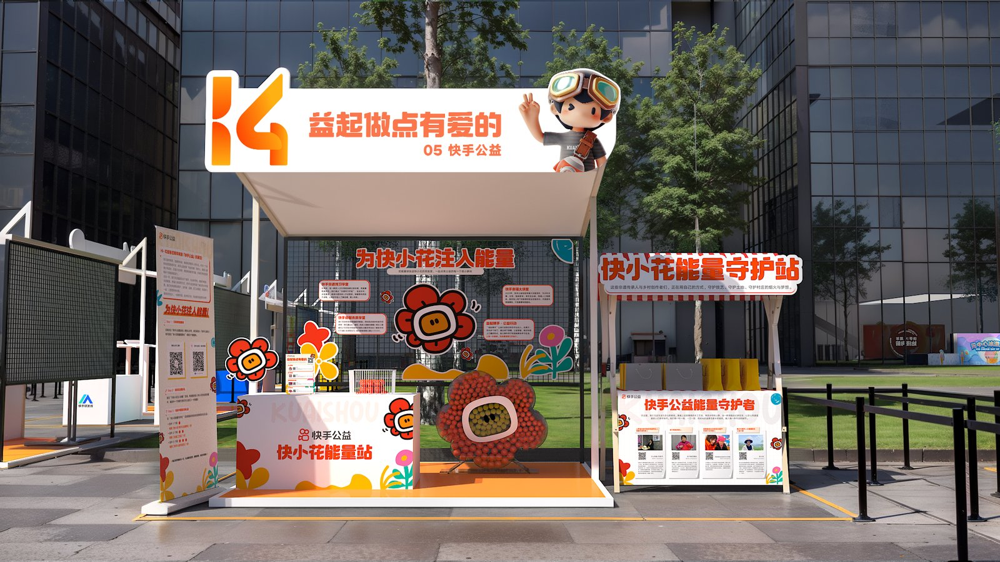
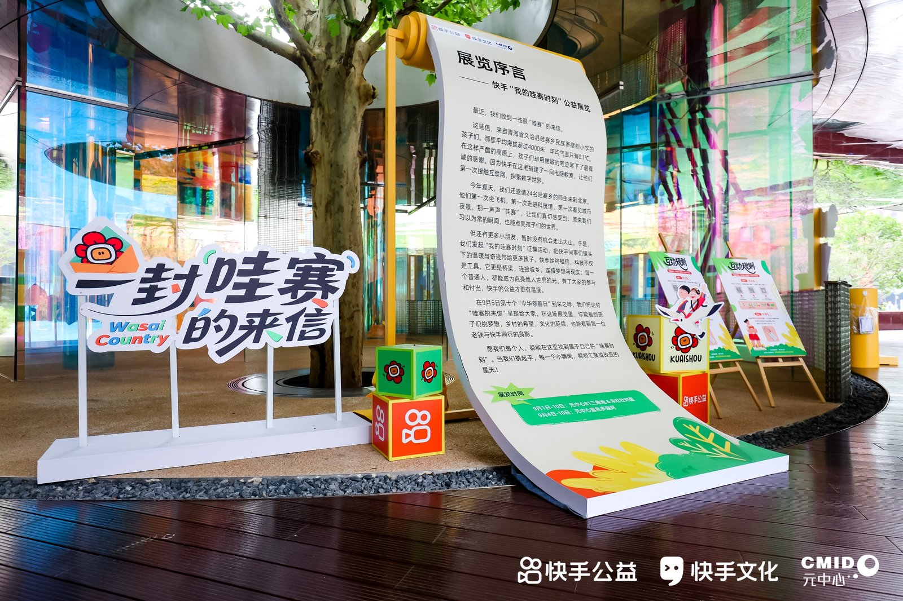
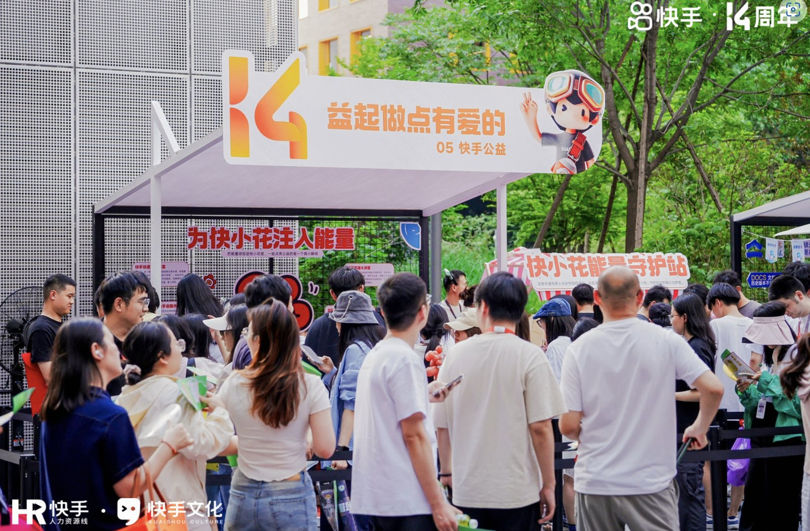
【4】跨业务赋能 & 资源整合
1.跨业务线输出公益资源，为三农、电商、直播业务侧的重点活动加码，共创"公益 × 业务"融合场景（如快手马年星晚、春耕新农人大赛、聚星达人创收营等）。
2.维护政府与KOL资源池：商务部、组织部、网信办、团委等 20+ 政府单位，20+ 位百万粉达人，10+ 家地方行业协会。
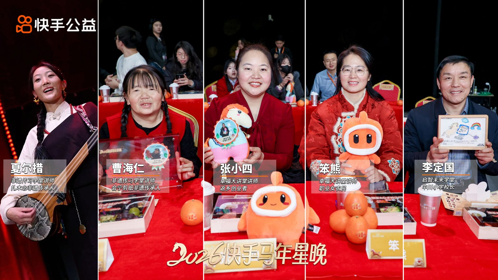
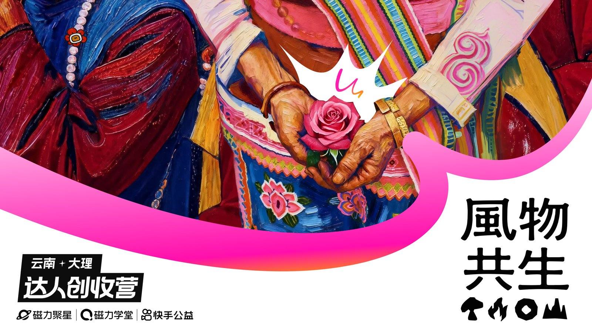
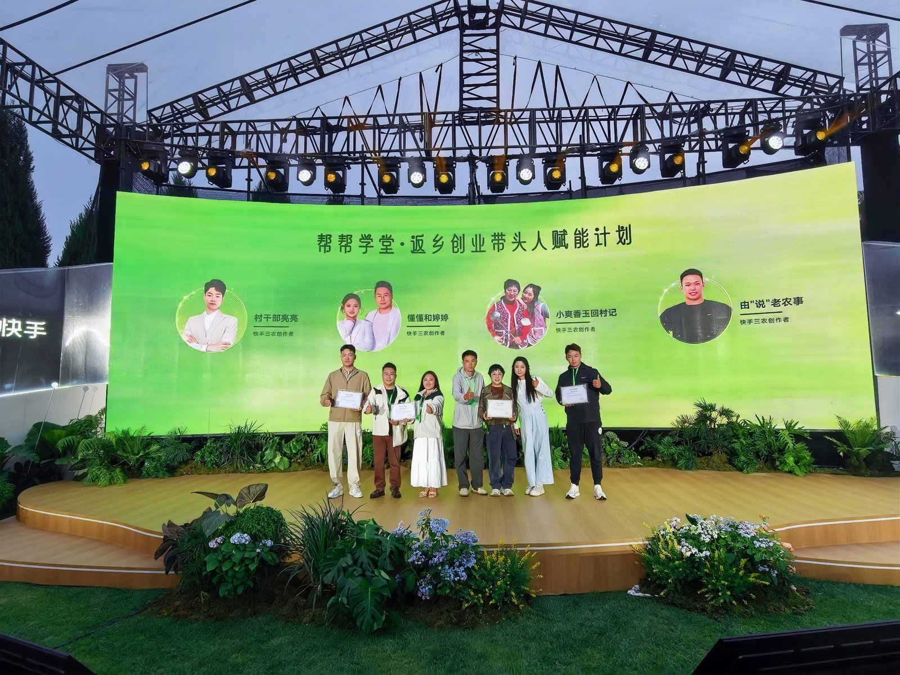
工作成果
公益 IP 影响力与资源沉淀
「帮帮学堂」走进全国 50+ 市县，线上线下覆盖近 200 万人次；端内话题播放量 2048 万+，孵化 3 位百万粉账号、20+ 位 10 万+ 粉创作者；获新华网、公益时报等主流媒体报道 10+ 次，民政局、商务部等地方政府感谢信 10+ 封；斩获"中国新媒体公益十大优秀案例""全球减贫最佳案例"，入选清华大学公管学院乡村振兴案例库；沉淀 20+ 省市县级政府合作关系、20+ 位百万粉中腰部达人、10+ 家地方行业协会。
司内品牌 campaign 成效
「一封'哇塞'的来信」曝光5000+次，超1000名员工参与，筛选 40 份作品集结成《大山外的世界》画册赠予青海、山西山区学生，并联动快手党委实地回访方山县第一小学。增强员工企业文化认同。14 周年司庆公益展位线下打卡2000+人次、直播观看近5000人次，公众号单场涨粉960人、Kim 群新增 1000+（群规模破 3100），展位喜爱度同比+3%；
回现 · 品牌策划
杭州菲林拾影文化创意有限公司 · 品牌策划
2023.07 — 2024.11
工作内容
品牌内容体系搭建
从 0 到 1 搭建回现reflash（艺术留学品牌）小红书内容矩阵，制定内容策略与视觉规范，主导系列选题策划、拍摄剪辑与文案产出；同步负责品牌周边的策划、打样与制作，从内容到实物完善品牌触点。
线下活动策划与运营
策划并落地多类型品牌活动：参与艺术集市、书展等场景搭建展位，展出回现艺术摄影与商业摄影作品，触达潜在学员、沉淀私域；策划艺术展览（「问题是」「有所建树」），既作为品牌曝光阵地，也帮助在读学员的艺术作品获得公众展出机会；打造「动动派对」系列休闲活动（露营、运动会等），提升在读学员的学习体验与品牌情感联结。
工作成果
品牌曝光与业务增长
「问题是」（杭州仓美术馆 2000+ 人次）、「有所建树」（杭州天目里 4000+ 人次）两场艺术展览均登顶当时段大麦展览热门榜第一，评分 9.8 分；品牌认知度与口碑双提升，带动新增学员 20+ 位，助力公司营收增长 300 万+。
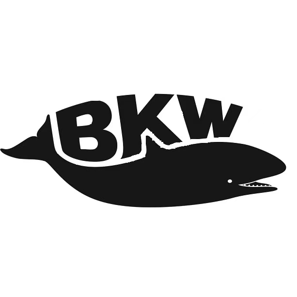
BKW Studio 实习
北京黑威兰影视文化传播有限公司 · 影视策划
2022.07 — 2023.05
工作内容
影视项目策划与制作
参与 B 站头部综艺《GQ：红毯背后》《轰隆隆隆遇见你》、纪录片《杀马特教父杀出工厂流水线后，该杀向何处》三个项目的策划与制作：协助导演、编剧搭建剧本内容框架，配合制片人完成预算制定与选角工作；统筹供应商对接、合同归档与跨组协调，现场处理突发状况保障拍摄进度；项目结束后完成财务结算、文件存档，并参与部门内项目执行 SOP 沉淀。
工作成果
头部 IP 数据表现
《轰隆隆隆遇见你》B 站播放量 4733 万+，点赞 17.4 万、收藏 1 万+；《GQ：红毯背后》B 站播放量 1824 万+，点赞 29.6 万、收藏 2 万+；纪录片《杀马特教父杀出工厂流水线后，该杀向何处》B 站播放 15.6 万+，入围谢菲尔德国际纪录片电影节。
品牌策划与整合营销
从品牌定位、视觉体系、内容矩阵到落地传播，跨综艺、纪录片、艺术展览、互联网公益等多品类内容均有实战
social campaign 策划（话题运营、KOL 共创、UGC 激励）、新媒体内容矩阵搭建、私域引流与社群运营
主流媒体 BD 与对外传播口径统筹
资源整合与活动操盘
大型线下活动全流程操盘：艺术展览、品牌活动、公益落地
20+ 政府单位常态化对接（商务部、组织部、网信办、团委等）
20+ 位百万粉中腰部 KOL/KOC 资源池运营
跨业务线协同与品牌联名共创
工具与审美
熟练使用 PR、剪映、Lightroom 进行内容产出
深度使用 ChatGPT、Claude、Codex 等主流 AI 工具搭建工作流，提升内容生产与项目管理效率
持续关注影视、艺文、品牌营销前沿案例，保持审美在线
普通话一级乙等 ｜ 机动车驾驶证 C1
📚 公益领域深耕
深入学习CSR、ESG理念与实践，研究企业公益品牌建设方法论，探索"科技+公益"的创新模式
🤖 AI 赋能工作流
探索AI工具在内容创作、数据分析、项目管理等场景的应用，提升工作效率与产出质量
🎨 创意审美积累
持续关注艺术展览、影视作品、品牌营销案例，保持对美学的敏感度和创造力
🌐 行业视野拓展
关注互联网平台社会责任、乡村振兴、公益传播等前沿议题，参与行业交流与案例研究